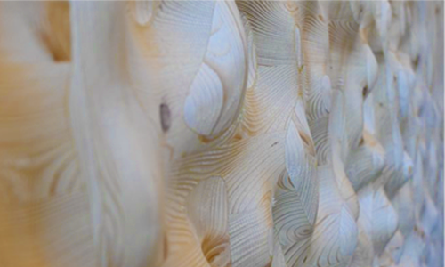

<br/>
Produced in controlled factory conditions, Mass Timber panels, when installed, are often left exposed to showcase the natural 
beauty of the wood. This practice opens avenues for surface treatments to impact acoustic performance. Research on mass timber's
acoustic properties mainly centers on building acoustics and sound transmission. This project examines the potential of milling 
complex geometric patterns into mass timber walls and ceilings. These patterns not only enhance the space's aesthetics and express 
the wood's material qualities but also improve room acoustic performance through sound wave scattering properties that are tuned 
for specific frequencies programmed into the noise depths of the Schroder diffuser.
